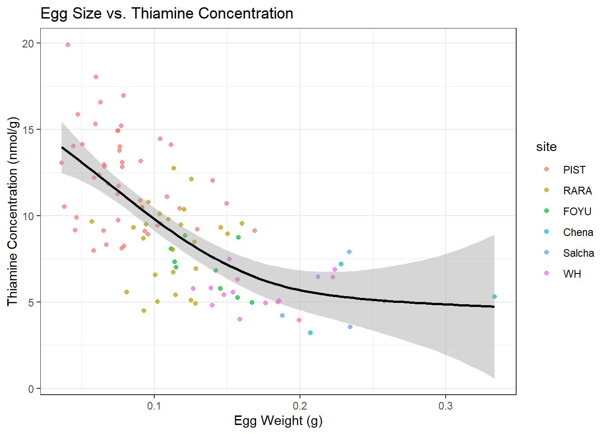
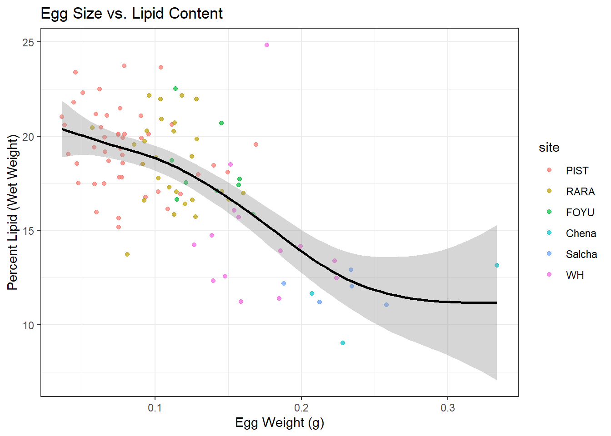
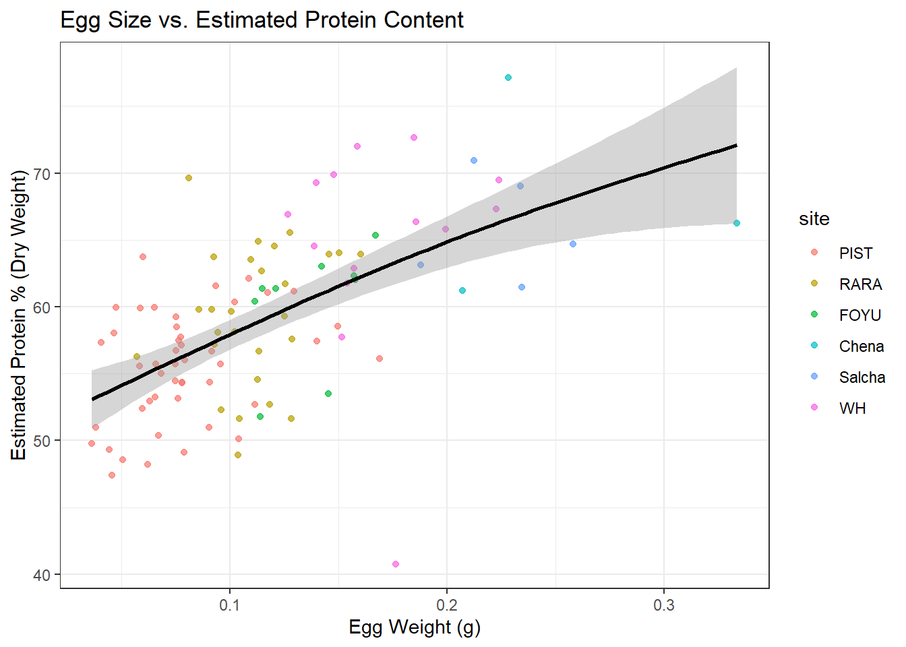
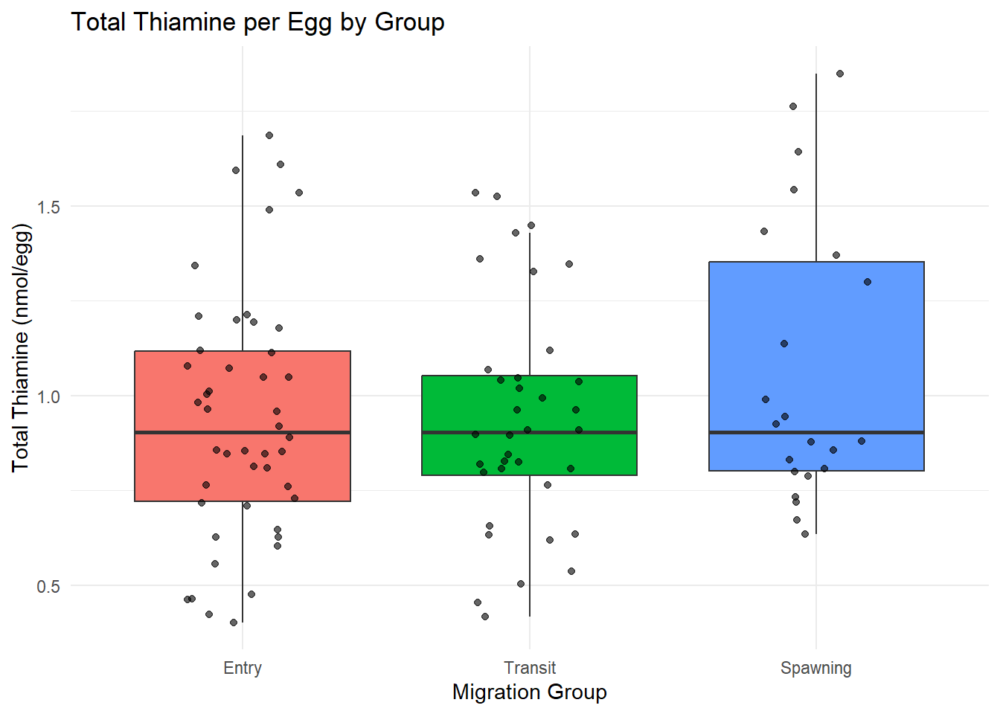
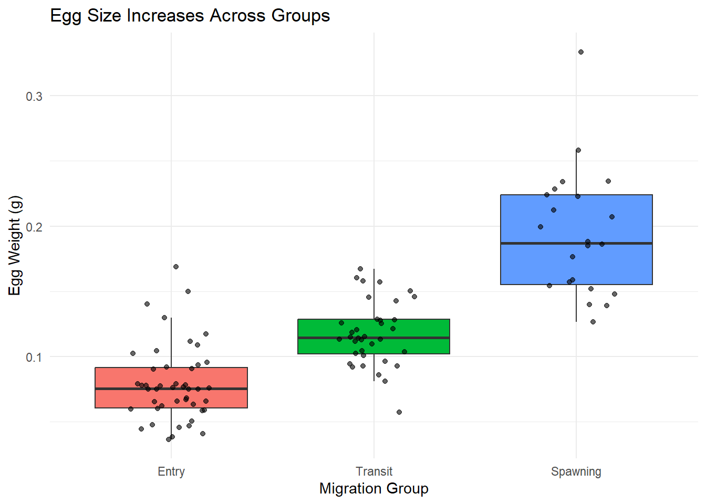

Show/Hide Code
# Load all necessary packages
library(tidyverse)
library(here)
library(mgcv)
library(knitr) # For creating nice tables
# Load the raw data
yukon_data <- read_rds(here("data", "yukon_egg_thiamine_2023.rds"))This report details the analysis of Chinook salmon egg composition from the Yukon River. We investigate how egg components like thiamine, lipids, and protein change with egg size and across different river migration groups.
This first step loads the required R packages and the dataset for the analysis.
# Load all necessary packages
library(tidyverse)
library(here)
library(mgcv)
library(knitr) # For creating nice tables
# Load the raw data
yukon_data <- read_rds(here("data", "yukon_egg_thiamine_2023.rds"))Here, we clean the raw data by removing missing values and calculating several new variables related to egg composition.
# Remove rows with missing values
yukon_clean <- yukon_data |>
drop_na(nmol_T_g, g_egg, pct_moisture)
# Calculate estimated protein and total mass of each component
# Note: Protein is estimated by difference, a hypothesis to be confirmed.
yukon_clean <- yukon_clean |>
mutate(
pct_dry_matter = 100 - pct_moisture,
pct_lipid_dry = (pct_lipid_wet / pct_dry_matter) * 100,
pct_protein_est_dry = 100 - pct_lipid_dry,
lipid_g = g_egg * (pct_lipid_wet / 100),
water_g = g_egg * (pct_moisture / 100),
protein_g_est = g_egg * (pct_dry_matter / 100) * (pct_protein_est_dry / 100)
)This section explores the non-linear relationships between egg size (g_egg) and key compositional variables.
We investigate the “dilution effect” where thiamine concentration decreases in larger eggs.
ggplot(yukon_clean, aes(x = g_egg, y = nmol_T_g)) +
geom_point(aes(color = site), alpha = 0.7) +
geom_smooth(method = "gam", formula = y ~ s(x), color = "black") +
labs(
title = "Egg Size vs. Thiamine Concentration",
x = "Egg Weight (g)",
y = "Thiamine Concentration (nmol/g)"
) +
theme_bw()
# Formally model the relationship
gam_model <- gam(nmol_T_g ~ s(g_egg), data = yukon_clean)
summary(gam_model)
Family: gaussian
Link function: identity
Formula:
nmol_T_g ~ s(g_egg)
Parametric coefficients:
Estimate Std. Error t value Pr(>|t|)
(Intercept) 9.3581 0.2579 36.28 <2e-16 ***
---
Signif. codes: 0 '***' 0.001 '**' 0.01 '*' 0.05 '.' 0.1 ' ' 1
Approximate significance of smooth terms:
edf Ref.df F p-value
s(g_egg) 2.338 2.962 30.28 <2e-16 ***
---
Signif. codes: 0 '***' 0.001 '**' 0.01 '*' 0.05 '.' 0.1 ' ' 1
R-sq.(adj) = 0.466 Deviance explained = 47.8%
GCV = 7.1483 Scale est. = 6.9189 n = 104Interpretation: The GAM summary shows a highly significant relationship (\(p < 2\times 10^{-16}\)). The effective degrees of freedom (EDF) of 2.34 confirms the relationship is non-linear. The model explains 46.6% of the variance in thiamine concentration, indicating a moderately strong relationship.
Here, we test the hypothesis that larger eggs have a different lipid concentration.
ggplot(yukon_clean, aes(x = g_egg, y = pct_lipid_wet)) +
geom_point(aes(color = site), alpha = 0.7) +
geom_smooth(method = "gam", formula = y ~ s(x), color = "black") +
labs(
title = "Egg Size vs. Lipid Content",
x = "Egg Weight (g)",
y = "Percent Lipid (Wet Weight)"
) +
theme_bw()
gam_lipid <- gam(pct_lipid_wet ~ s(g_egg), data = yukon_clean)
summary(gam_lipid)
Family: gaussian
Link function: identity
Formula:
pct_lipid_wet ~ s(g_egg)
Parametric coefficients:
Estimate Std. Error t value Pr(>|t|)
(Intercept) 17.8710 0.2393 74.68 <2e-16 ***
---
Signif. codes: 0 '***' 0.001 '**' 0.01 '*' 0.05 '.' 0.1 ' ' 1
Approximate significance of smooth terms:
edf Ref.df F p-value
s(g_egg) 3.466 4.306 19.81 <2e-16 ***
---
Signif. codes: 0 '***' 0.001 '**' 0.01 '*' 0.05 '.' 0.1 ' ' 1
R-sq.(adj) = 0.45 Deviance explained = 46.8%
GCV = 6.2224 Scale est. = 5.9552 n = 104Interpretation: This relationship is also highly significant (\(p < 2 \times 10^{-16}\)) and non-linear (EDF = 3.47). The model explains 45% of the variation in lipid percentage.
Finally, we visualize the relationship between egg size and our estimated protein metric.
ggplot(yukon_clean, aes(x = g_egg, y = pct_protein_est_dry)) +
geom_point(aes(color = site), alpha = 0.7) +
geom_smooth(method = "gam", formula = y ~ s(x), color = "black") +
labs(
title = "Egg Size vs. Estimated Protein Content",
x = "Egg Weight (g)",
y = "Estimated Protein % (Dry Weight)"
) +
theme_bw()
This section uses visualizations and formal statistical tests (ANOVA) to determine if egg properties differ significantly among the “Entry,” “Transit,” and “Spawning” migration groups.
# Ensure the 'group' variable is a factor for modeling
yukon_clean$group <- as.factor(yukon_clean$group)Hypothesis: The total amount of thiamine allocated to each egg is stable across migration groups, even if concentration changes.
ggplot(data = yukon_clean, aes(x = group, y = nmol_T_egg)) +
geom_boxplot(aes(fill = group), outlier.shape = NA, show.legend = FALSE) +
geom_jitter(width = 0.2, alpha = 0.6) +
labs(
title = "Total Thiamine per Egg by Group",
x = "Migration Group", y = "Total Thiamine (nmol/egg)"
) +
theme_minimal()
# A non-significant result (p > 0.05) is expected.
anova_thiamine_egg <- aov(nmol_T_egg ~ group, data = yukon_clean)
# Use kable() for a clean table output
knitr::kable(anova_thiamine_egg |> broom::tidy())| term | df | sumsq | meansq | statistic | p.value |
|---|---|---|---|---|---|
| group | 2 | 0.2847958 | 0.1423979 | 1.323682 | 0.2707306 |
| Residuals | 101 | 10.8652911 | 0.1075771 | NA | NA |
Conclusion: The ANOVA result (p=0.271) is not significant. This supports our hypothesis that there is no statistical difference in the total amount of thiamine per egg between the migration groups.
Hypothesis: Egg weight increases as fish migrate upstream.
ggplot(data = yukon_clean, aes(x = group, y = g_egg)) +
geom_boxplot(aes(fill = group), outlier.shape = NA, show.legend = FALSE) +
geom_jitter(width = 0.2, alpha = 0.6) +
labs(
title = "Egg Size Increases Across Groups",
x = "Migration Group", y = "Egg Weight (g)"
) +
theme_minimal()
anova_egg_weight <- aov(g_egg ~ group, data = yukon_clean)
knitr::kable(anova_egg_weight |> broom::tidy(), caption = "ANOVA Summary")| term | df | sumsq | meansq | statistic | p.value |
|---|---|---|---|---|---|
| group | 2 | 0.1960410 | 0.0980205 | 91.28316 | 0 |
| Residuals | 101 | 0.1084545 | 0.0010738 | NA | NA |
knitr::kable(TukeyHSD(anova_egg_weight) |> broom::tidy(), caption = "Tukey HSD Post-Hoc Test")| term | contrast | null.value | estimate | conf.low | conf.high | adj.p.value |
|---|---|---|---|---|---|---|
| group | Transit-Entry | 0 | 0.0384143 | 0.0210687 | 0.0557599 | 2.3e-06 |
| group | Spawning-Entry | 0 | 0.1147610 | 0.0945552 | 0.1349669 | 0.0e+00 |
| group | Spawning-Transit | 0 | 0.0763467 | 0.0552525 | 0.0974410 | 0.0e+00 |
ANOVA and Tukey HSD results for egg weight by group.
Conclusion: The ANOVA result (\(p < 2 \times 10^{-16}\)) is highly significant. The Tukey HSD test confirms that the mean egg weight is significantly different between all pairs of groups, increasing from Entry to Transit to Spawning.